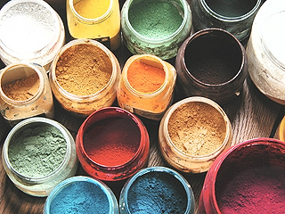
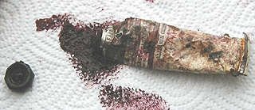

Séparer
ou non
liants et pigments
Par contre, cette formule implique
quelques restrictions. Le tube n'est pas né seulement parce que le
broyage industriel de l'époque n'avait pas la qualité actuelle et
nécessitait une intervention du peintre. Il a de réels aspects
pratiques.
A lire dans le Courrier des Lecteurs,
Commencer à lier pigments et huile
L'intérêt initial du tube,
le procédé par séparation
Au XIXème siècle, l'invention du tube a permis aux peintres de transporter littéralement
l'atelier sur le motif. C'est encore là que réside
son intérêt majeur. Comme le font toujours certains peintres contemporains,
les artistes préparaient la pâte et l'injectaient eux-mêmes dans les tubes.
C'est cependant l'industrialisation de ce procédé qui fut déterminante.
En effet, plus tard, cet outil s'est déplacé dans l'atelier pour des raisons de temps :
préparer les couleurs soi-même était soi-disant trop long, trop difficile, point de vue
excessif assez typique de la période moderne. On a en effet beaucoup exagéré sur ce point : depuis longtemps, les pigments
proposés dans le commerces sont déjà très finement broyés ; il
n'y a plus qu'à les mélanger au liant avec une spatule ou un autre outil, ce qui prend seulement quelques minutes.
Le procédé de broyage (ou de liage si l'on préfère ce terme plus juste mais
moins usité) à la façon ancienne met en oeuvre une
molette - destiné au liage du pigment, mais aussi au broyage terminal - et un plaque de porphyre (non de marbre, contrairement à
l'opinion répandue). Le broyage sur plaque de porphyre avec une molette de
cristal est un procédé chic mais d'une utilité discutable. Lire
le chapitre XIII, La molette.
De plus, il existe des méthodes simples permettant d'accélérer la
préparation de la peinture. L'argument de la durée de préparation est encore
valable, mais bien moins qu'il ne le fut.
Voir aussi
Tubes de peinture : conservation in Courrier des Lecteurs.
Procédés de
préparation rapide
Note 1, mélanges : sauf
exceptions, il est
fortement déconseillé de mélanger des pigments avant de les incorporer à un
liant. Chaque pigment a son pouvoir colorant qui ne se révèle que lorsqu'il
est "mouillé" (sur le mouillage pigmentaire, lire le
chap. XXII). Il est presque impossible de prévoir les résultats d'un
mélange opéré à sec.
Note 2, quantités : les
procédés exposés ci-dessous concernent des quantités relativement faibles.
Nous préconisons en effet la préparation de masses de peintures en rapport
avec la séance de travail et non avec la surface à traiter. Si toutefois
celle-ci devait être particulièrement importante, le mélange pourrait
être opéré à l'aide d'une perceuse munie d'un embout idoine, réglée à
vitesse minimale.
1 - avec
l'huile
temps de
préparation d'une palette d'une douzaine de couleurs :
10 minutes - 1/4
d'heure ou davantage en fonction des surfaces et de la durée de la séance, des
volumes traités et... de l'habitude.
Cette méthode a été largement exploitée par de nombreux peintres
contemporains. En cas de problème, n'hésitez pas
à nous envoyer un courrier.
La molette, comme nous le disions, est devenue inutile. Par contre, la spatule
à peindre est pratiquement indispensable.
* verser l'huile sur la palette en faisant plusieurs
petites flaques bien espacées, autant que de couleurs à préparer.
* poser le premier pigment sur la première flaque (en général,
pour commencer, il suffit
de couvrir généreusement la flaque en débordant un tantinet).
Le laisser s'imbiber. Certains auteurs prétendent que l'imbibition doit
durer une nuit.
L'expérience
démontre que c'est une durée incroyablement disproportionnée. Passez à
l'opération suivante sans vous inquiéter.
Pour une raison expliquée ci-dessous,
il vaut mieux traiter en premier le blanc de titane, si vous vous servez de
ce pigment.
* pendant que le premier pigment s'imbibe, bien
nettoyer la
spatule (la tremper dans
l'essence
minérale, l'essuyer une première fois, tremper à nouveau et essuyer le plus soigneusement possible) et passer à la couleur suivante.
* répéter l'opération pour chaque pigment. Lorsque vous avez terminé, le
premier pigment que vous avez traité est déjà bien imbibé d'huile. S'il
ne l'est pas suffisamment, remuez-le un peu à la spatule et laissez-lui un peu de temps supplémentaire.
* en respectant le même ordre, faire tour à tour chaque mélange à la
spatule sans omettre de bien nettoyer celle-ci à chaque fois. C'est très
important à ce stade d'élaboration de votre peinture. Une spatule sale
gâcherait les couleurs avant même que vous ayez commencé à vous en
servir
* refaire le tour de vos couleurs, ajouter du pigment ou de l'huile
de sorte à obtenir des pâtes ayant sensiblement la consistance de la
peinture qui sort d'un tube - ou bien celle qui vous convient. A chaque fois, malaxez bien la
pâte. Si vous
ajoutez du pigment, respectez un temps d'imbibition correct : passez à la
couleur suivante et attendez le tour suivant pour faire le mélange. La
présence (rare) de grumeaux rebelles - caractéristique du blanc de
titane - implique un temps d'imbibition et des malaxages
supplémentaires. C'est pour cette raison que le titane doit être traité en
premier.
L'erreur la plus courante est de fabriquer une pâte
trop liquide. Cela peut provoquer par la suite, au séchage sur le
tableau, des plissures épouvantables. De plus, le temps de siccativation
est beaucoup plus long lorsque la pâte est grasse. Il faut donc spécifier
qu'une pâte doit être liquéfiée après le liage et surtout pas pendant : on dilue la pâte
plus tard avec une essence ou un médium et non avec une
huile pure.
Une bonne pâte a une certaine "tenue plastique".

Certaines personnes prennent beaucoup de temps pour mélanger chaque couleur
parce qu'elles veulent peut-être en préparer de trop grandes quantités en une seule fois,
mais surtout parce qu'une opinion persiste (chose courante en peinture) : celle selon laquelle le pigment doit
être broyé par l'utilisateur final. C'est
totalement faux.
Quant aux
quantités, préparez le pigment au fur et à mesure des besoins. On a toujours trop de
pâte à mettre en réserve en godets en fin de séance ! Si
vous employez des quantités faibles, vous n'aurez jamais à en venir là :
protégez la palette de l'air libre (couvrir les couleurs avec des gobelets
plastiques, des assiettes en carton, tout ce que vous trouverez) et elle sera prête pour le lendemain.
Il vaut mieux réserver les grosses quantités pour les mélanges précieux.
2
- avec d'autres liants
Il est possible d'utiliser sensiblement la même méthode que
ci-dessus avec du liant acrylique, du
jaune d'oeuf, une eau gommée, de la laque de Coromandel, etc. (la plupart des liants).
MAIS dans certains cas, lorsque le liant est assez
épais (donc particulièrement avec les liants acryliques et vinyliques), il
n'est pas inutile de diluer initialement le pigment. 5% d'eau distillée est une quantité
souvent indiquée par les fabricants (se référer éventuellement à la notice du liant).
On imbibe le pigment avant de verser le liant.
Cette pratique, très utilisée dans le domaine industriel, pose des problèmes au
peintre. Celui-ci doit rester conscient du fait que l'eau s'évaporera. La
matière obtenue étant plus fluide qu'avec le pigment pur, la tendance à ajouter
trop de pigment est naturelle. Quelque chose est faussé dans le jugement
intuitif de la qualité de la pâte, mais ce passage est pratiquement inévitable, sans quoi le
mélange liant-pigment, trop épais, demeure grumeleux.
Traitement typique pour l'acrylique et le vinyle
On ne se sert pas systématiquement d'une palette, mais de
contenants comme des petits pots ou aussi bien des assiettes en carton où l'on
mouille le pigment avec un peu d'eau (le minimum) avant de "fouetter" avec
n'importe quel instrument que vous jugerez adapté (par exemple une
queue de morue) pour détruire tout grumeau. Puis, on introduit le liant dans
le mélange et l'on fouette de nouveau avec le même instrument, ou bien on malaxe
avec une spatule à peindre, comme dans le cas
habituel de la peinture à l'huile.
Les procédés à l'eau posent des problèmes de
conservation. Il est très conseillé d'utiliser de l'eau distillée et de
désinfecter les contenants et les outils à l'eau de Javel ou à l'alcool à brûler. De plus, il
vaudra mieux éviter de tremper une brosse ou quoi que ce soit dans le pot de
peinture ou de liant. Il est préférable de
verser une partie du contenu de celui-ci sur une palette ou un autre contenant.
Avec les peintures acryliques et vinyliques, il est
important de tenir compte du fait que l'aspect blanchâtre apporté par le liant
disparaîtra au séchage - et même déjà au mouillage. La peinture sèche sera plus sombre.
Le procédé consistant à imbiber
initialement le pigment peut être employé avec
d'autres liants épais et d'autres chimies que celles de l'acrylique et du vinyle. On substitue simplement à l'eau un diluant correspondant au
liant concerné.
Un cas
particulier : la dispersion
Ce terme est employé abusivement (lire la
définition du glossaire) mais il fait référence.
Certains fabricants proposent un produit original : le pigment pré-dilué
(dit dispersion) dans un peu d'eau distillée. Cette solution est intéressante, mais
certainement pas d'un intérêt capital car l'opération consistant à imbiber le
pigment peut être réalisée par n'importe qui en peu de temps. Par ailleurs, le
diluant eau limite la mise en oeuvre aux peintures aqueuses.
Cependant, l'idée de préparer soi-même les pigments sous forme de
dispersions, avec le diluant approprié, n'est pas à rejeter.
Elle permet
d'aller très vite lors de l'incorporation au liant. Mais comme nous
l'avons précisé ci-dessus (2 - avec d'autres liants),
la présence de diluant fausse le jugement dans la mesure où la consistance de la
pâte parait plus liquide qu'elle ne le sera après l'évaporation de ce diluant,
poussant le peintre à incorporer de trop fortes quantités de pigments
comparativement à la quantité réelle de liant.
Aussi ne conseillerons-nous ce procédé qu'aux peintres déjà bien familiarisés
aux produits qu'ils emploient.
Philosophies et avantages
comparés
Des critiques souvent fondées ont opposé les peintres aux fabricants
au sujet du choix de l'huile pour les couleurs en tubes (lire l'article sur
l'huile
- huiles à peindre et siccativation et sur l'huile
de lin - tendances, implications) et pareillement en ce qui concerne
l'aquarelle (provenance de la gomme arabique, choix des adjuvants)
ainsi que la
gouache (il
existe plusieurs liants et adjuvants possibles pour fabriquer une gouache).
Les industriels ne doivent certainement pas être systématiquement blâmés : ils ont
souvent cherché les solutions les plus satisfaisantes pour le peintre. Progressivement,
des fabricants ont même opté pour une communication transparente, mais certains
sont revenus sur cette décision (lire passage
in Les huiles).
Pourtant, que dire des tubes de peinture acrylique ? Le fabricant devrait-il
afficher les formules chimiques des complexes polymères composant les liants ? Cela
ne nous renseignerait guère ! Noter qu'il en va de même avec les flacons de
liant acrylique... à une différence près : le produit peut être testé pur.
Il est certain que toutes les peintures en tubes posent
par essence, de toute manière, le problème de la connaissance de la composition du
produit, déterminant le comportement de celui-ci et par conséquent l'emploi et
le traitement que le peintre en fera. A la question "que contient mon
tube de peinture ?", nous ne pouvons répondre que ceci :
* soit le fabricant
indique lui-même la composition du tube (liant et pigment), ce qui rend possible
un travail correct sans test préalable dans le cas général... si la confiance
est au rendez-vous
* soit seule l'identité du
pigment est spécifiée (cas
très courant). Il
faut alors s'en remettre à l'expérience à moyen ou long terme pour en savoir un peu
plus sur la qualité du produit et ses propriétés (mélanges, tenue à la
lumière, etc.). Signalons de plus que le nom du pigment "en clair"
n'est pas toujours indiqué. De nombreux tubes n'arborent que les codes du
"colour index". L'acheteur peut consulter en ligne notre nomenclature
pigmentaire pour effectuer le décodage, mais comment faire au moment de
l'achat ?
* soit aucune
indication n'est mentionnée. Cela ne signifie pas forcément que le produit soit
mauvais. Il faut le tester, s'appuyer sur l'expérience des autres peintres, se
documenter directement auprès du fabricant.
Il faut toutefois se garder de dire du mal indûment du tube.
Grâce à leurs laboratoires, certains fabricants proposent des produits qu'un
peintre ne pourrait créer en atelier et dont la qualité est irréprochable.
Le procédé sans tube, kui, correspond aux avantages suivants :
* une meilleure maîtrise du liant de certaines peintures (huile de lin, d'oeillette,
de carthame de telle ou
telle marque, oeuf, liant acrylique dans une certaine
mesure, Caparol
®,
oeuf, gomme
arabique, liant méthylcellulosique, etc.)
* un important sujet de polémique est éliminé : le manque
d'information de la part de certains fabricants de tubes. Là, c'est le peintre qui décide
en bonne partie de la composition de sa peinture... propos à tempérer
cependant : les fabricants de liants ne sont pas tous partisans de la
transparence en matière d'information. Il peut arriver, surtout avec les
peintures synthétiques, qu'un liant ne donne pas les résultats escomptés.
On peut dire dans l'ensemble que les liants
synthétiques peuvent poser ce genre de problèmes
avant tout à cause de carences en matière d'information, mais aussi à cause
de la difficulté d'informer le public sur des produits parfois
chimiquement très complexes
* l'exploration et la combinaison de plusieurs disciplines, tout
simplement en changeant de liant sans changer de pigments. Ce procédé a
une valeur évidente pour la pédagogie et la recherche artistique. La préparation séparée du liant (cuisson
et cuisine des huiles, emploi d'huiles claircées, adjonctions faites à une gomme arabique, à une caséine, au jaune d'oeuf en peinture a tempera,
par exemple), ouvre sur un vaste domaine culturel et créatif.
* un choix raisonnable des pigments est possible :
* à plus bas prix pour les fonds, ils ne présentent presque jamais des
qualités aussi mauvaises que les bas de gammes en tubes, flacons et
pots
* d'origine contrôlée pour les plus importants, voire, dans de rares cas, recueillis et
préparés par les peintres eux-mêmes. Ils peuvent aussi être associés à
des liants dont aucun équivalent n'existe dans les tubes.
* un coût globalement très inférieur au point de rendre de nombreuses
techniques abordables pour des personnes disposant d'un budget limité ou
situées dans des lieux où l'approvisionnement pose des problèmes (pays en
voie de développement, pays en guerre, etc.).

* une conservation beaucoup plus durable. Le pigment pur se dégrade très
peu lorsqu'il est conservé à l'abri de la lumière. Parallèlement, certains liants comme
les huiles à peindre se bonifient à mesure du temps passé en pleine lumière. A
l'opposé, les tubes ont une tendance prononcée à rouiller et à se percer.
Perspectives
Les fabricants de peinture ont voulu fournir un produit fini, prêt à
peindre, et ont souvent réussi à proposer effectivement des peintures de
qualité. Mais la volonté de fournir un "atelier portable" aux
peintres itinérants a peut-être dérivé en mode : le
"complètement tubulaire" est un choix commercial répondant à une
demande limitée à une époque et impliquant certaines restrictions, au
détriment d'une autre peinture probablement plus qualitative dans l'ensemble
mais surtout plutôt plus créative en soi.
En effet, l'aspect "cuisine" du procédé séparant liants et pigments est
séduisant à juste titre. Des cours lui sont maintenant exclusivement
consacrés
et sont proposés par des "ateliers" offrant un enseignement relativement
ludique de type
"méthode Martenot" dont les élèves sont généralement des amateurs
- mais combien de peintres professionnels ont commencé par là ?
Il n'est pas exclu que la réduction du temps de travail et l'essor de ce que l'on nomme globalement
"les loisirs créatifs", incluant les arts plastiques vus comme loisirs
(soit dit sans dépréciation), puissent modifier sensiblement les données
commerciales et industrielles. Davantage de temps libre implique une
demande sensiblement différente en terme de produits et de procédés.
Retour
début de page